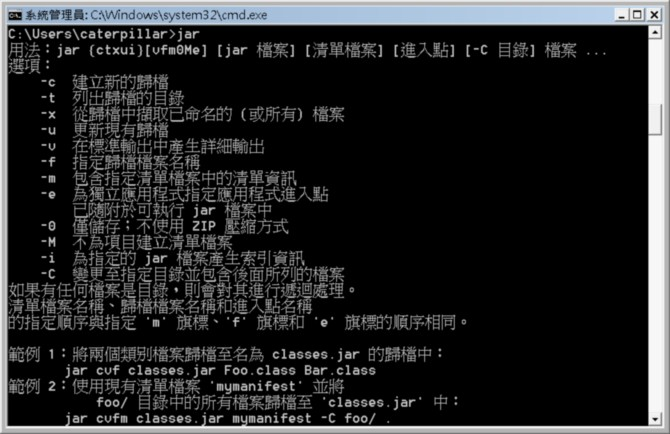
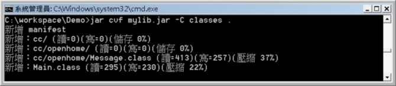
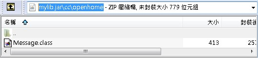
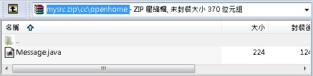
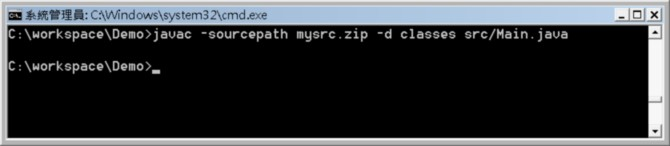

|
|
基本上，在開發完程式之後，你不會將一堆.class檔案直接交出去，而是會將之封裝為JAR檔案。JAR檔案採用ZIP壓縮格式，將你指定的.class檔案壓縮為一個檔案，副檔名慣例上為.jar，不過，你要取.zip也是可以的，只不過在某些作業系統上，會失去一些檔案關聯的功能。 JAR檔案可以使用JDK的工具程式jar來製作：  所幸的是，jar工具竟然有中文說明 XD 最基本的指令組合，可以在jar說明中範例1、範例2中看到。以 package 與 sourcepath、classpath 中的範例來說，可以進入C:\workspace\Demo之後，然後執行以下指令：  這樣，在你的Demo目錄中，就會產生mylib.jar。JAR檔案就像一個特殊的資料夾，其中的.class，也必須依套件階層放在對應的資料夾中。  正如在 CLASSPATH 是什麼？ 中說明過的，如果你需要mylib.jar中的類別，則設定Classpath中可以找到mylib.jar檔案即可。 如果你願意，也可以將原始碼包裝為一個JAR檔案（或ZIP檔案），當中的原始碼若有包括套件，則一樣，以對應的套件階層放置在對應資料夾中。例如，可以將 package 與 sourcepath、classpath 中的src目錄壓縮為zip檔案：  如果日後你想要指定-sourcepath，則直接指定到mysrc.zip的位置即可，例如若mysrc.zip放在c:\workspace\Demo下，可以如下執行指令：  你可以再參考 製 作 Executable JAR 的內容。 |